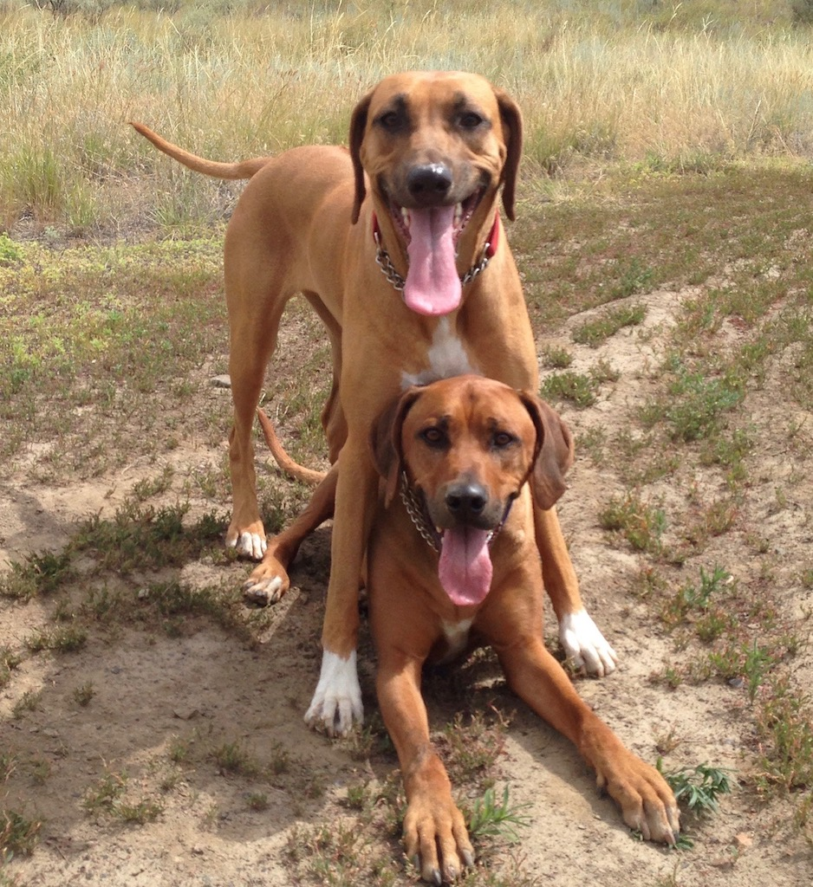

Why Us

At Cruizin K9, we understand that your dog is not just your pet but a valued member of your family. We pride ourselves on making sure that each dog in our care is treated as if they were our own. As a self proclaimed K9 life coach and 4-legged fitness instructor, both your pet's emotional and physical needs are sure to be met. We truly love what we do and look forward to discussing how we can help you with your pet care needs in the near future.
Lori Bradley - Cruizin K9